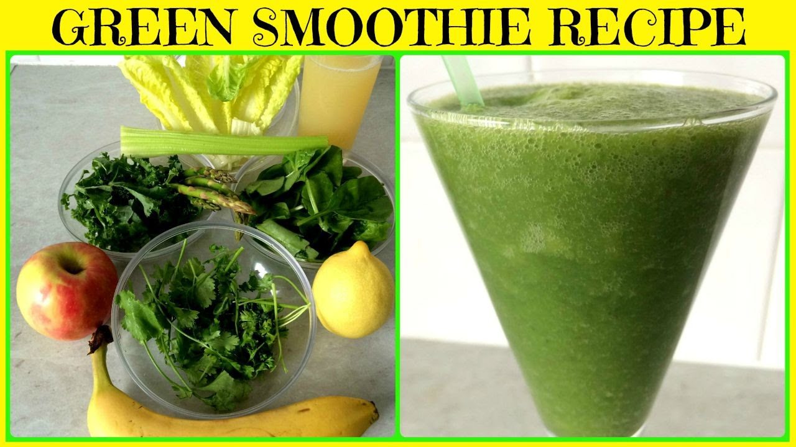

BLOG
Super DETOX Green Cleansing Smoothie
If you're familiar with my site at all, you've probably heard me mention My Morning Smoothie about a dozen times at least.
It's a staple in my new whole foods lifestyle and the most important one at that. And for the past 8 months I haven't strayed from that recipe- until now.

I don't know why or really what came over me? but I just felt like I needed to go one step further with my morning smoothies. Get serious. Really dig deep into the potential cleansing power of green smoothies. I looked all over the blogosphere, taking bits and pieces from here and there until I finally came up with one that felt right with me. And what a powerful DETOX smoothie it ended up being!!
My original morning smoothie only had 6 ingredients. This one has 14.
You might be wondering why in the world I would trade-in such a simple recipe for such a complex one. Well, because the complexity of ingredients is what makes this new smoothie SO POWERFUL.
The changes I saw and felt once I swapped morning smoothie recipes was crazy! I thought I was doing great before, but I had no idea. My skin is spotless, I have SO much energy, and my under eye circles have virtually disappeared. I've notice dark spots on my skin, marks that just refuse to completely heal, that have just vanished. And I can't even begin to imagine how my body is benefiting internally!! There is no way I can deny the powerful affects these new detoxifying ingredients are having. Trust me, I am never going back to the beginners 6. From now on I am all in!
Just look what these ingredients can provide for you-
Spinach/Kale: These leafy greens are both great sources of amino acids (protein), calcium, beta carotene (vitamin A), vitamin K, iron, manganese, magnesium, zinc, folate, and selenium. All around super foods, spinach and kale are great for strengthening the body, creating beautiful skin, boosting the immune system, and providing important antioxidants. Also, each is full of fiber which is great for cleansing the colon!
Romaine: Contains vitamin C and beta carotene (vitamin A). These two nutrients work together in the body to prevent plaque from forming on artery walls. It is also a good source of potassium, folate, iron, vitamin K, manganese, vitamins B1 and B2, and chromium. Romaine helps to regulate blood pressure, build blood, and support body movement.
Cucumber: Highly hydrating, cucumbers are full of B vitamins, silica, and electrolytes that help build clearer, brighter skin. The vitamin C, caffeic acid, and electrolytes in cucumbers makes them great at fighting puffiness and bloating in the body, working as an anti-inflammatory team.
Celery: Very alkaline, full of calcium, magnesium, and potassium. Good source of B1, B2, B6, and C vitamins, folate, iron, and amino acids. Celery helps to lower high blood pressure and reduce puffiness. It contains compounds polyacetylene and pthalides which reduce inflammation and stress (causing blood vessels to dilate), respectively. Celery is a powerful detoxifier and colon cleanser.
Pear: Contains vitamins C, E, B, and K, copper, manganese, potassium, iron, magnesium, selenium, calcium, zinc, and folate. Pears are wonderful for the skin and supportive of both the lungs and the colon.
Banana: Contains vitamin B6 and magnesium which help promote better sleep. Bananas also have fiber, vitamin C, potassium, and vitamin A. They promote good digestion, prevent constipation, contribute to healthy blood pressure and cholesterol levels.
Lemon: Extremely alkaline, are high in vitamin C, and traces of calcium, potassium, and magnesium. Lemons are a powerful detoxifying agent. They support liver function, purify the blood, destroy free radicals and toxins, flush out bacteria, fight wrinkles and rejuvenate skin. Great for long-term weight loss.
Chia Seeds: These seeds swell 10 to 15 times their original size when placed in liquid, which makes them great for weight-loss. They also help stabilize blood sugar levels, providing you with longer lasting energy. Chia seeds are an excellent source of protein, calcium, anti-oxidants, and omega-3 fatty acids.
Mint: Great source of vitamin C and beta carotene (vitamin A), copper, iron, potassium, magnesium, and calcium. Mint aids in digestion, is helpful in relieving congestion of the respiratory tract, and lowers blood pressure.
Parsley: A powerful detoxifier, parsley aids digestion, removes toxins from the body, acts as a diuretic by flushing out the kidneys, and purifies the blood. It contains vitamin A, C, and E, folate, iron, and anti-oxidants.
Cinnamon: Studies have found that cinnamon helps lower blood sugar, have anti-oxidant effects, fight bacteria, and reduce inflammation.
Ginger: Helps ease nausea, maintain proper blood circulation, improve nutrient absorption in the body, is anti-inflammatory, strengthens immune system, and fights common respiratory problems.
Turmeric: Very high in anti-oxidants, turmeric is a great anti-cancer agent. It is also anti-inflammatory and works as a blood cleanser. Cleansed blood results in clearer, brighter skin.
Cayenne Pepper: An incredibly potent spice, cayenne pepper is often used to detoxify and cleanse the body (mostly due to capsaicin). It has anti-cold/flu properties, aids in digestion, has anti-fungal properties, helps discourage formation of blood clots, supports weight-loss, promotes heart health, and aids in joint-pain relief.
Credits to: thegreenforks